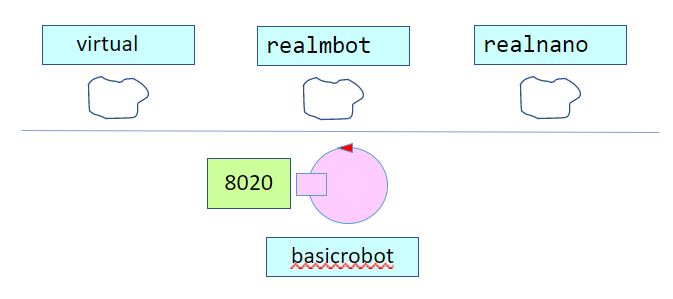
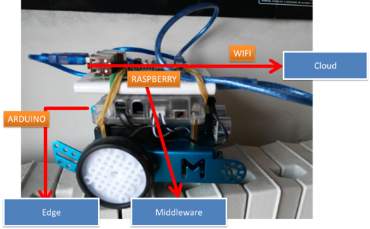

BasicRobot24¶
Obiettivo: introdurre un componente software che esegue comandi di spostamento di un DDR-robot ed altre funzionalità utili.
Il servizio offre anche un modo di operare in modo indipendente dalla tecnologia con cui è realizzato uno specifico DDR robot (virtuale o reale).
BR24 requisito tipidirobot¶
Facciamo riferimento ad almeno tre diversi tipi di robot:
{kind=link}
BR24 Una prima architettura¶
Si delinea una architettura come quella anticipata in RobotCleaner e qui riportata:

BR24: configurazione¶
La utility class unibo.robot.robotSupport.kt si occupa dei dettagli tecnologici specifici di ogni
tipo di robot utilizzando un supporto diverso per ciascun tipo.
BR24: supporti¶
per il VirtualRobot: virtualrobotSupport |
|
per il NanoRobot: nanoSupport, motors |
|
|  | per Mbot: mbotSupport |
{kind=link}
{kind=link}
{kind=link}
BR24 File di configurazione¶
Il file di configurazione è impostato su frasi JSon, come ad esempio il seguente
basicrobotConfig.json:
{"type":"virtual","port":"8090","ipvirtualrobot":"..."}
{"type":"realnano","port":"8020","ipvirtualrobot":"dontcare"}
//Arduino connesso al Raspberry:
{"type":"realmbot", "port":"/dev/ttyUSB0", "ipvirtualrobot":"-"}
//Arduino connesso al PC:
{"type":"realmbot","port":"COM6","ipvirtualrobot":"dontcare"}
Il codice è contenuto nel progetto unibo.basicrobot24, che fornisce il modello eseguibile basicrobotqak, che include i componenti riportati nella figura (generata) che segue:

Componenti (attori):
|
: |
BR24 Le funzioni¶
Il componente basicrobot viene visto dall’esterno come un servizio che realizza un insieme di funzionalità:
Esecuzione di richieste di ingaggio: messaggio Request engage:engage(CALLER)
Esecuzione di comandi elementari di movimento: messaggio Dispatch cmd:cmd(MOVE)
Esecuzione di step (movimento in avanti per un tempo dato): messaggio Request step:step(TIME)
Esecuzione di sequenze di movimento (piani): messaggio Request doplan:doplan(PATH,STEPTIME)
Esecuzione di posizionamento: messaggio Request moverobot:moverobot(TARGETX, TARGETY)
Il basicrobot esegue le funzioni 2-5 solo dopo essere stato ingaggiato da chi lo vuole utilizzare.
Internamente, il basicrobot:
delega engage/disengage al componente engager
delega doplan al componente planexec
delega moverobot al componente robotpos
BR24 messaggi¶
System BR24
Dispatch cmd : cmd(MOVE) //MOVE=w|s|d|a|r|l|h
Dispatch end : end(ARG)
Request step : step(TIME)
Reply stepdone : stepdone(V)
Reply stepfailed : stepfailed(DURATION, CAUSE)
Event sonardata : sonar( DISTANCE ) //percepito da sonarobs/engager
Event obstacle : obstacle(X)
Request doplan : doplan( PATH, STEPTIME )
Reply doplandone : doplandone( ARG )
Reply doplanfailed : doplanfailed( ARG )
Dispatch setrobotstate: setpos(X,Y,D)
Dispatch setdirection : dir( D ) //D =up|down!left|right
Request engage : engage(CALLER)
Reply engagedone : engagedone(ARG)
Reply engagerefused : engagerefused(ARG)
Dispatch disengage : disengage(ARG)
Event alarm : alarm(X)
Dispatch nextmove : nextmove(M)
Dispatch nomoremove : nomoremove(M)
//Endosimbiosi di robotpos
Request moverobot : moverobot(TARGETX, TARGETY)
Reply moverobotdone : moverobotok(ARG)
Reply moverobotfailed: moverobotfailed(PLANDONE, PLANTODO)
BR24 Componenti¶
engager |
Gestisce i messaggi engage/disengage usando un oggetto Kotlin OwnerManager. La richiesta engage produce la risposta engagedone in caso il robot sia libero e engagerefused nel caso di robot già ingaggiato. |
planexec |
Gestisce richieste doplan di esecuzione di una sequenza di mosse, inviando comandi al basicrobot e invia la risposta doplandone in caso di successo. Nel caso di ostacolo o di evento alarm, interrompe la esecuzione della sequenza, inviando la risposta doplanfailed. Non usa (e quindi non aggiorna) alcuna mappa della stanza. |
robotpos |
Gestisce richieste di posizionamento moverobot. Facendo Uso del planner, determina un piano di movimento per raggiungere la destinazione, che esegue usando planexec. Invia la risposta moverobotdone in caso di successo oppure moverobotfailed se la esecuzione del piano fallisce o viene interrotta. Gestisce anche il comando di utilità Dispatch setrobotstate:setpos(X,Y,D) per allienare la rappresentazione del planner sulla posizione corrente reale del robot fissata manualmente. |
basicrobot |
Gestisce direttamente comandi elementari cmd e richieste step (inviando la risposta stepdone in caso di successo e stepfailed in caso di ostacolo). |
BR24 come esecutore di movimenti¶
Il robot è un oggetto di dimensioni finite, inscrivibile in un cerchio di diametro
D(unità robotica) ed esegue movimenti a velocità costante.Il basicrobot fornito dal committente è un puro esecutore di comandi, con cui il robot può effettuare singole mosse o sequenze di mosse, a seguito di messaggi di richiesta.
Dispatch cmd:cmd(M)
Il robot cerca di eseguire la mossa
M (w|s|a|d|l|r|h)Request step:step(T)
Il robot cerca di fare un movimento in avanti di durata
Te risponde con:Reply stepdon:stepdon(ok) in caso di successo
Reply stepfailed:stepfailed(DURATION,CAUSE) in caso di fallimento
Request doplan:doplan( PLAN, OWNER, STEPTIME )
Il robot cerca di eseguire (via planexec) la sequenza di mosse
PLANe risponde con:Reply doplandone:doplandone(ok) in caso di successo
Reply doplanfailed:doplanfailed(PLANTODO) in caso di fallimento
BR24 e le mappatura dell’ambiente¶
Il concetto di viene formalizato introducendo una coppia di coordinate cartesiane che identifica una cella della mappa. |
{kind=link}
Muovere il robot con mossa step(T) con tempo T tale da spostare il robot (con velocità prefissata)
di uno spazio D, permette di costruire una formata da celle quadrate DxD.
Ad esempio:
0 1 2 3 4 5 6 7 x
0 |r, 1, 1, 1, 1, 1, 1,
1 |1, 1, 1, 1, X, X, 1,
2 |1, 1, 1, 1, X, X, 1,
3 |1, 1, X, 1, 1, 1, 1,
4 |1, 1, 1, 1, 1, 1, 1,
5 |X, X, X, X, X, X, X,
y
|
|
Un modo per costruire dinamicamente una sequenza di mosse con cui il robot può muoversi dalla posizione corrente r a un’altra posizione (libera) sulla mappa, consiste nell’utilizzo del pianificatore.
BR24 planexec¶
L’attore planexec ha il compito di eseguire un piano definito come una sequenza di mosse.
La sequenza di mosse che definisce un piano può essere espressa in forma verbosa (ad esempio [w, w, l, w, w]) oppure
in forma compatta (ad esempio wwlww).
Il messaggio di richiesta di esecuzione di un piano ha la forma: Request doplan:doplan(PLAN,OWNER,STEPTIME)
|
|
A questa richiesta, il planexec risponde con due possibili messaggi di risposta: Reply doplandone : doplandone( ARG )
Reply doplanfailed : doplanfailed( ARG )
|
|
Distribuzione docker su PC¶
Dockerfilebasicrobotforrasp23¶
## ----------------------------------------------------------
## Dockerfilebasicrobotforrasp23 for unibo.BR24
## This file should be copied on Rasp together with the
## required resources and executed there
## ----------------------------------------------------------
FROM balenalib/raspberry-pi-debian:buster
RUN apt update
RUN apt -y full-upgrade
RUN apt -yq install pigpio python-pigpio python3-pigpio wget
RUN sudo apt update
RUN sudo apt install -y openjdk-11-jdk
RUN sudo apt-get -y install python3-rpi.gpio
# ---- mjpg streamer
RUN sudo apt-get install build-essential
RUN sudo apt-get install make
RUN sudo apt-get install git
RUN sudo git clone https://github.com/jacksonliam/mjpg-streamer.git
RUN sudo apt-get install libjpeg8-dev imagemagick libv4l-dev v4l-utils make gcc git cmake g++
WORKDIR mjpg-streamer/mjpg-streamer-experimental/
RUN sudo make
RUN sudo make install
ENV LOG_LEVEL=debug
ENV TZ=Europe/Berlin
ENV DEMOMODE=false
EXPOSE 8020/tcp
ADD ./unibo.BR24-2.0.tar /
WORKDIR /unibo.BR24-2.0/bin
COPY ./*.pl ./
COPY ./*.json ./
COPY ./*.bin ./
COPY ./*.txt ./
COPY ./*.c ./
COPY ./*.py ./
COPY ./*.sh ./
CMD ["bash", "activate.sh"]
activate.sh¶
cd /mjpg-streamer/mjpg-streamer-experimental
bash ./start.sh &
cd /unibo.BR24-2.0/bin
./unibo.BR24
BR24.yaml¶
version: '3'
services:
wenv:
image: docker.io/natbodocker/virtualrobotdisi23:1.0
ports:
- 8090:8090
- 8091:8091/tcp
- 8091:8091/udp
BR24:
image: docker.io/natbodocker/BR24:2.0
#image: BR24:2.0
ports:
- 8020:8020/tcp
- 8020:8020/udp
depends_on:
- wenv
webAloneBR24.yaml¶
version: '3'
services:
webrobot23:
#image: webrobot23:1.0
image: docker.io/natbodocker/webrobot23:1.0
ports:
- 8085:8085
webBR24.yaml¶
version: '3'
services:
wenv:
image: docker.io/natbodocker/virtualrobotdisi23:1.0
ports:
- 8090:8090
- 8091:8091/tcp
- 8091:8091/udp
BR24:
image: docker.io/natbodocker/BR24:2.0
ports:
- 8020:8020/tcp
- 8020:8020/udp
depends_on:
- wenv
webrobot23:
image: docker.io/natbodocker/webrobot23:1.0
ports:
- 8085:8085
depends_on:
- BR24
Distribuzione docker su Raspberry¶
webbasicrobotonRasp23.yaml¶
version: '3'
services:
webrobot23:
image: docker.io/natbodocker/imgwebrobot23:1.0
ports:
- 8085:8085/tcp
BR24:
image: docker.io/natbodocker/imgBR24:1.0
privileged : true
ports:
- 8020:8020/tcp
- 8080:8080